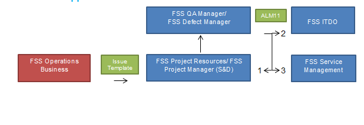

Use the <a> tag......
go to blah| Who | Trigger | Action | Outcome |
|---|---|---|---|
| Operations/Business | Experiencesan issue | Call the control room number or contact the project team. | TEASDFS |
| Operations/Business | Experiencesan issue | Call the control room number or contact the project team. | Key user analyzes the issue and tries to resolve it. |
| Experiences an issue | Call the control room number or contact the project team. | Key user analyzes the issue and tries to resolve it. | |
| Experiences an issue | Call the control room number or contact the project team. | Key user analyzes the issue and tries to resolve it. |
Test 0test
Test 1
[Project Name Issue] Description
Issue Background:
Classification: (Critical, Major, Minor)
Impact to Business (Shipments stop, Report not working etc.:
Should be solved by when:
Current Workaround: